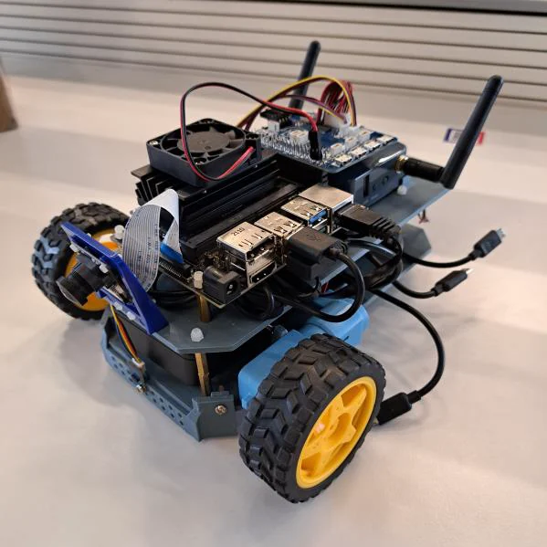
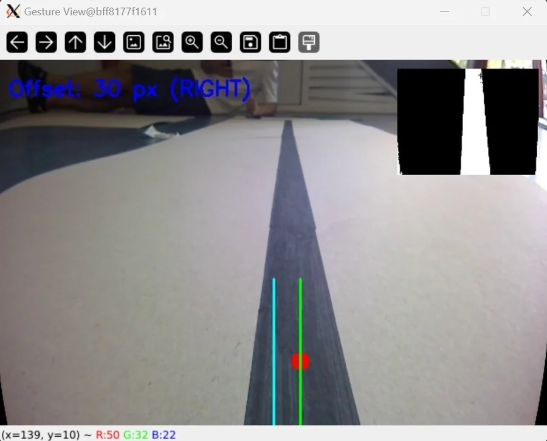
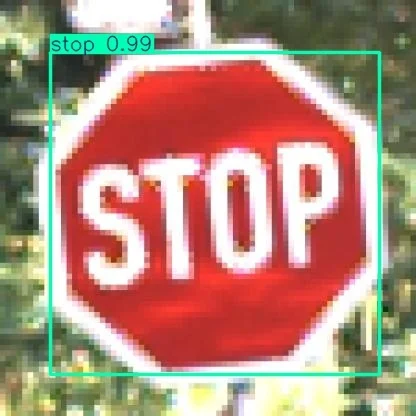
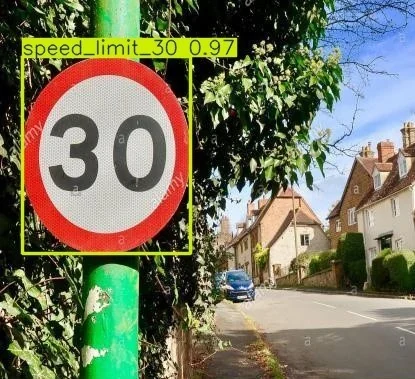
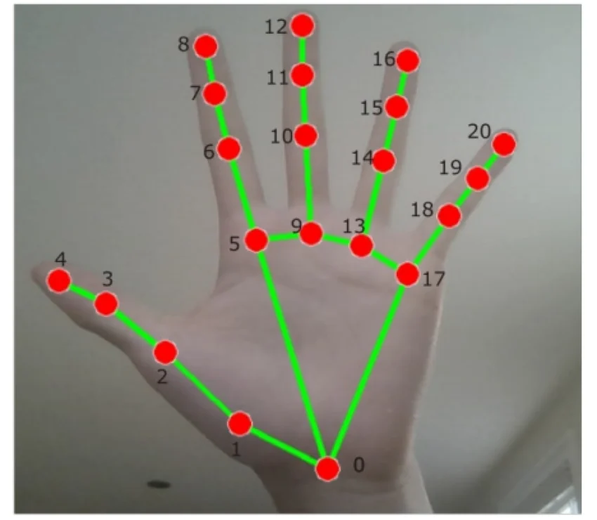

One camera, one Jetson Nano, and a course full of traffic signs, QR codes, hand signals and racing flags. The car reads them all and drives the lap by itself.
What if a robot had to pass the same driving test we do?
Stay in lane, obey the signs, wait for pedestrians, and follow the marshal's flags, all in real time on a credit-card-sized computer.

Borrowed from Formula 1: wave a green flag and the car sets off, show red and it stops. It works by finding the dominant colour in each frame.

Follows the line and corrects instantly when it drifts.

A YOLOv8 detector spots STOP signs and brings the car to a halt.

Reads the limit and adjusts its speed to match.

An open hand tells the car to go, like a traffic officer waving it through.
It also reads QR codes for turns and waits for moving pedestrians before starting. When cues conflict, a priority system decides, with safety first.